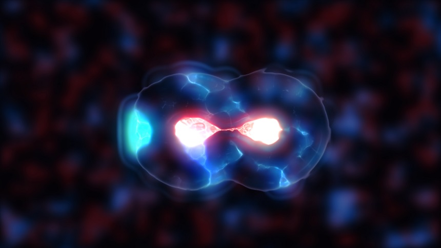

Understanding Crypto - Forks
A blockchain is a distributed ledger among many computers. All of those computers know the rules and follow them precisely. When someone decides to do something that is against the preset rules, all the enforcers block that move and make sure that it is not recorded. A blockchain transaction not following the rules is not completed. Now, what happens when new rules are actually needed? How can one change a system that is, by its nature, made to be unchangeable? It is done by making a “fork”.
What is a Fork?
A fork means that the blockchain has been updated and now is different from the old version. The difference is that when you update your Photoshop, for example, the update is issued by the company and everyone who turns on their computer receives said update. It is different with blockchains, as they are generally decentralized. There is no automatic process that updates your software, nor there is no way to make people use the new software. Everyone does what they want.
Some may choose to use the older version as they like it better. Some will just not be interested in the new functions it offers. Others might dislike the new Terms and Conditions while a rag-tag group might decide to make a completely new program by using the Photoshop engine as their base. The freedom of decentralization means everyone can do what they think is right.
Soft fork
Most updates happen without any problems and are published constantly. Those are usually various security measures and small tweaks to improve performance. While these happen fairly often in the crypto world, the developers do try to minimize the need for them, as it can cause small instabilities.
Imagine a small town without a central government. All the rules are something that people have all agreed to. These rules make sense to them and every policeman is enforcing the same law. Time goes on, technology moves forward, the town gets bigger and now needs different things. Everyone decides that new rules are needed and agrees that it is for the best. The problem is, as there is no governing body that can inform all the law enforcement at the same time, there will be some minor inconveniences. In some places of the town the police will still be enforcing the old rules, causing conflicts and confusion.
The task is to inform everyone about the new rules before any decisions are taken. In a blockchain that would mean that a new transaction is being made that is legitimate, but the computer that checks it still works with the old protocol, deems the transaction as fraudulent and forbids it. That is why most exchanges will stop your ability to trade for a few hours while the soft fork is implemented.
Hard fork

A hard fork is a different scenario. This means that the change that is made in the blockchain is too significant, too important to be considered just a “minor upgrade”. It is something that dramatically changes the whole build of the blockchain. And the new version is just incompatible with the old one. This is where the term “fork” comes from - there is one path that suddenly turns into two paths. The old blockchain keeps going forward with no changes. The tokens are the same, the history is all the same, nothing has changed at all.
It is the new fork that has changed. An offshoot has appeared, with new protocols, new improvements. This new path can be started for various reasons. Of course, the inability to come to an agreement between the parties is the one that seems the most important. People can not agree on how to move forward and decide that it is impossible to continue forward by accepting the rules of the other side. Then the community divides in two.
Yet there are other times when a hard fork is in order. In 2016 a group of hackers stole 55 million from a project on Ethereum. Because of the amount, it was hard for many to accept the loss and just move on. That is why many proposed that a hard fork should be made. Meaning that they were to take an older “savefile” before the hack and just continue from there, pretending that nothing has happened and the theft never occurred.
Of course, there was a group of purists, orthodox people, who would gladly suffer the consequences of the theft if that would save the integrity of Ethereum. Meaning that there is no authority to “reverse” bad decisions and, in general, the attitude “life is life” should be adopted, even if it means being robbed. This school of thought stayed on the old Ethereum blockchain that continued moving forward without a rollback and called itself Ethereum Classic.
What happens to coins?
In a soft fork? Nothing. Life goes on as planned. But in a hard fork it is actually quite interesting. Remember, it is not a new blockchain without a history. It is a fork in an existing blockchain with the same history as the core blockchain. That means that if you had 20 coins in Ethereum, you would have the same amount in Ethereum Classic now too. You could say that you have doubled your money. Though that would not be true. Remember, the coin costs as much as people think it is worth.
If there is a huge split in the community, then half of it has lost trust in the other half. For example, only 10% of Ethereum users stayed on Ethereum classic. It had gone its own development path and a token costs less than 90 dollars right now, while Ethereum costs 3300 dollars. This is one of the rare times when a new fork succeeds better than the old one, but that is just because 90% of the community accepted it, thus being able to keep the original name.
There have been many forks of Bitcoin: Bitcoin Gold, Bitcoin Diamond, Bitcoin TX, Bitcoin Cash and so on. None of them has even come close to the popularity the original blockchain enjoys. They might be improvements on the technology, sure, but they have ignored the basic rule of Bitcoin itself - it is not the technology, it is the idea.
Thank you for reading our blog. If you have any questions about the topic or want to suggest a new one, please write an email to [email protected].